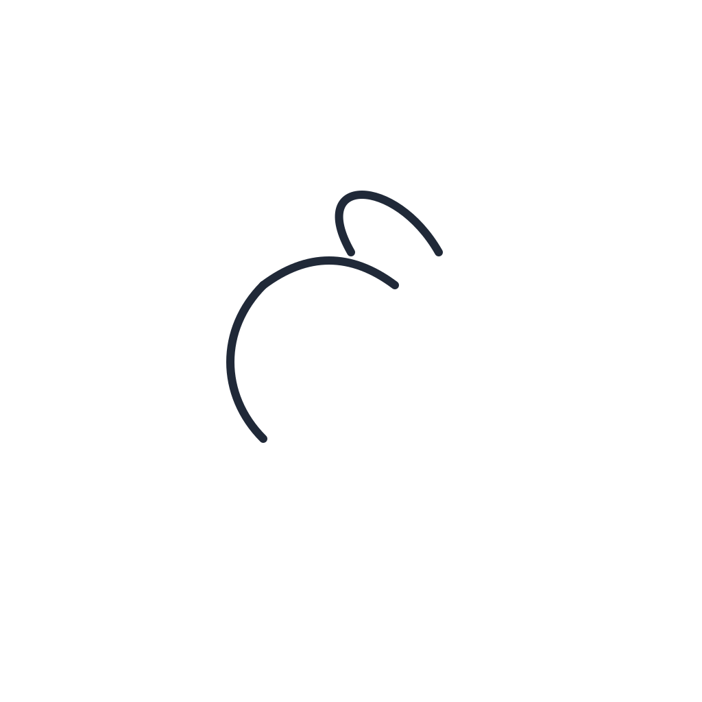
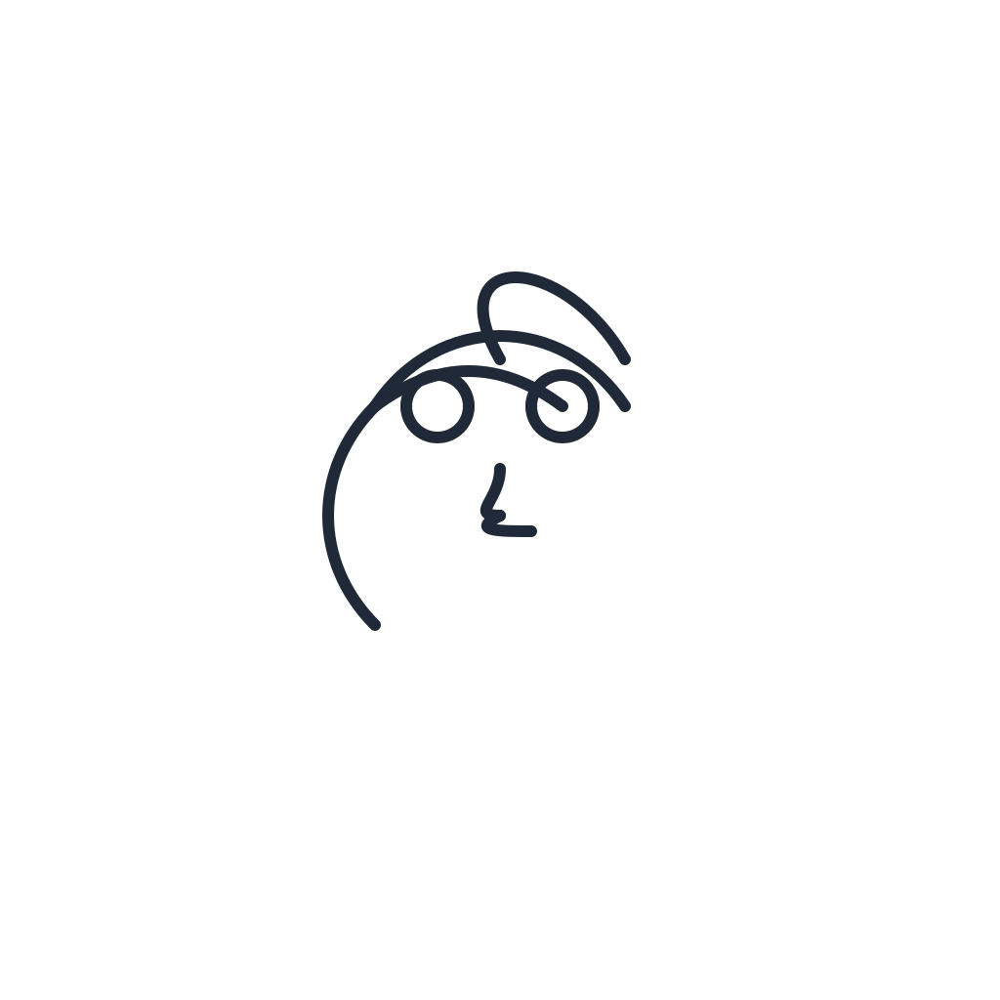

Bước 1Vẽ một hình cong lớn để làm thân mèo, rồi vẽ một hình cong nhỏ hơn phía trên để làm đầu mèo. Cuối cùng, vẽ một đường nối
Bước 4Vẽ một hình nhỏ ở giữa hai mắt làm mũi, và một đường cong nhỏ ở dưới làm miệng cười